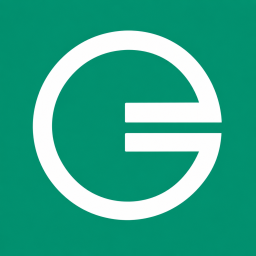

Chain ID 2027 · 公民币 GMB
添加并切换公民链后，可直接在 MetaMask 中查看余额、估算网络费并发起转账。
电脑请使用已安装 MetaMask 扩展的浏览器；手机请在 MetaMask App 的“探索”内置浏览器中打开本页面。两端需要分别添加网络。
转账费率：0.1%；最低手续费：0.10 GMB，按分四舍五入。MetaMask 的网络费估算可能包含缓冲，实际手续费以交易回执为准。